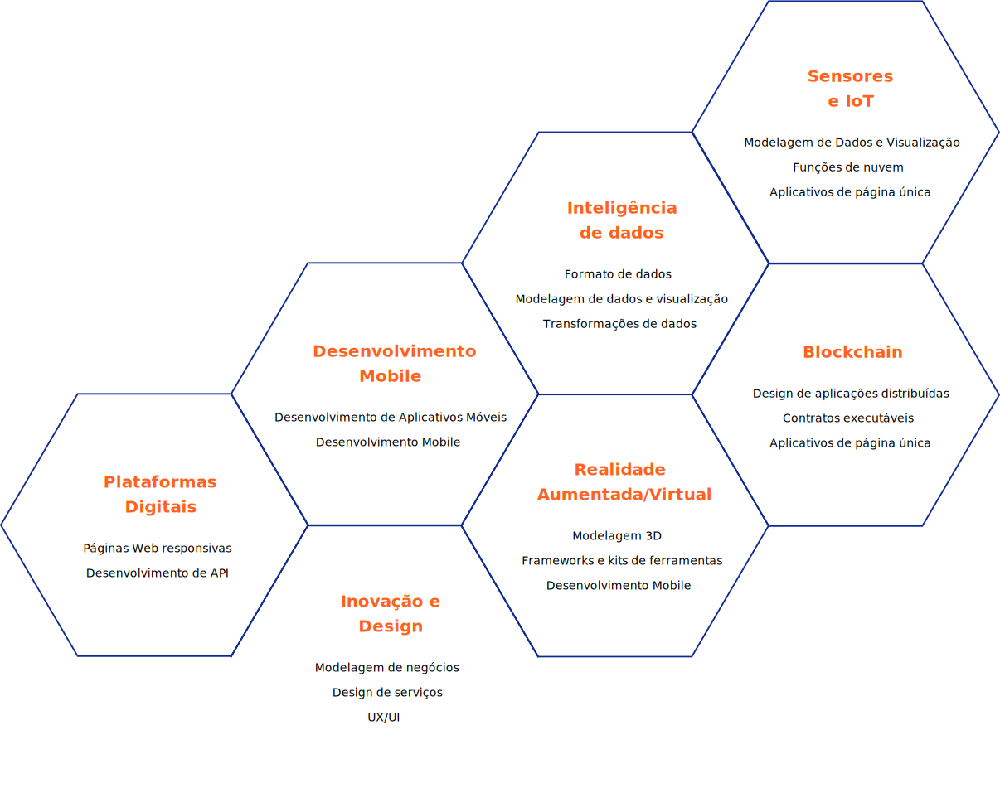

A beaconl
towards change
Vai na Web is a movement of high technology and social impact which expands human capacities and requalifies the workforce to meet the challenges of Industry 4.0.
— Our Approach
Aligned to competencies for the information age
— All our program is credited by SFIA (Skills framework for information age).
— An international standard covering all skills
and skills required for information technology professionals.

Develops leadership and social-emotional skills
— Technology is not only done with computers, but with intangible competences: empathy, resilience, creativity,
collaboration and communication.
— 25% of the program is directed to the development of socioemotional skills
Oriented to real challenges and innovation themes
— Enable the workforce to achieve strategic objectives and drive new business models
— The program

Tech vision
Talent pipeline
Tech and social skills

Qualified workforce
— Be visionary
A portfolio of emerging and collaborative technologies to empower the digital thinking of winning business teams.
Build Your Journey
We create with your organization a unique set of skills enable your workforce. Talk a little about your goals, challenges and we will present a customized plan to get you started.